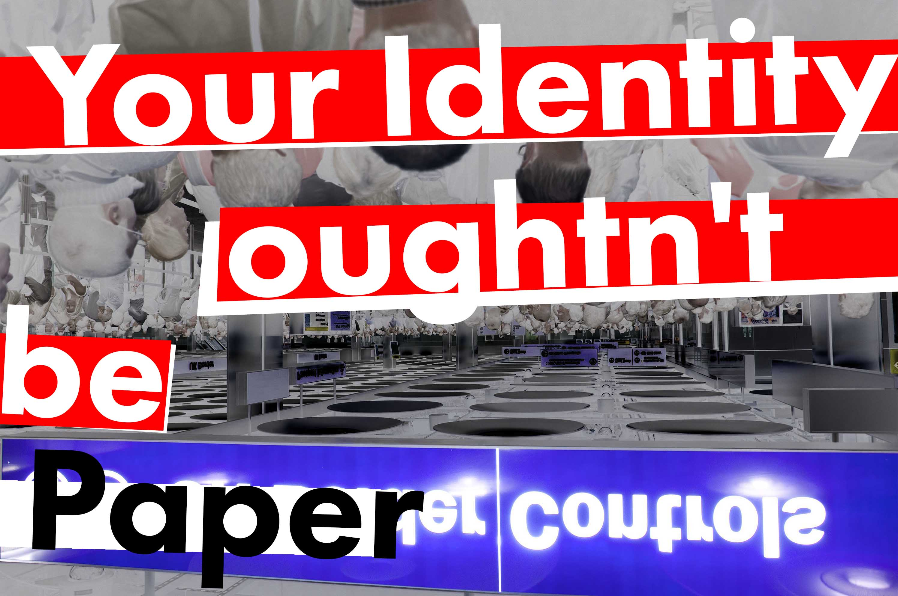
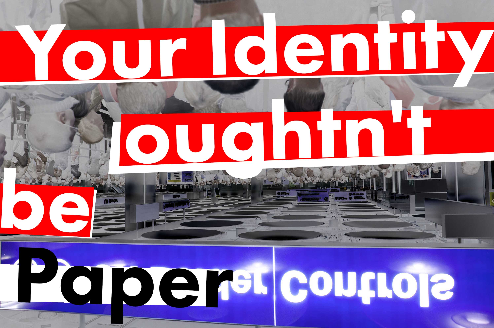

Protest Poster Design
Final sRGB versions


I start with some derivitve work than did some sketches and unsaved exporations based on mainly local street art and early 2D and 3D raster graphics styles with added stylistic smooooth.
 
